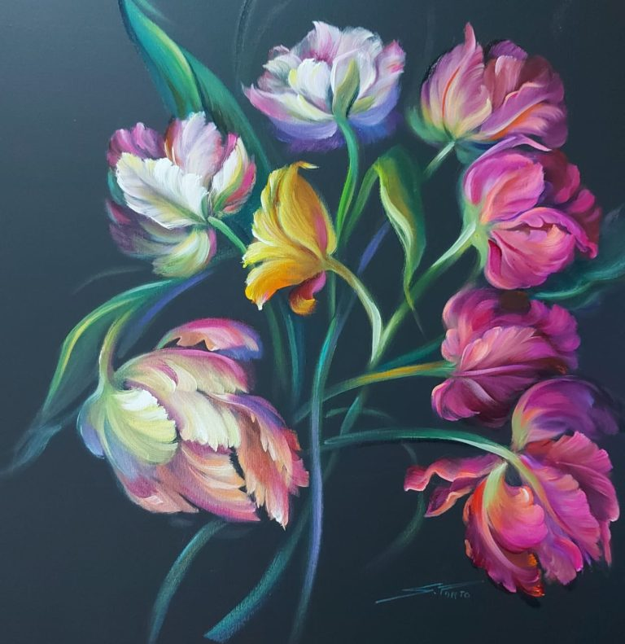

Ateliê em Porto Alegre · R. João Guimarães, 31 — Rio Branco
Catálogo › Tulipas

Obra de Silvia Porto
Nº 131 · Tulipas
Tulipas é uma pintura original em acrílico da artista Silvia Porto, de Porto Alegre.
Uma obra floral cheia de cor, que traz leveza e vida para salas, quartos e escritórios.
Encomende o seu quadro pintado à mão pela Silvia, em tinta acrílica sobre tela, no tamanho que você quiser (prazo mínimo de 15 dias úteis).
Não há venda online: a Silvia confirma com você o tamanho, o acabamento, o valor e o prazo antes de começar a pintar.
Atendimento direto com a Silvia: (51) 99283-8195 · silviabeust1@gmail.com
Experimente
Veja o quadro na sua parede
Escolha um ambiente ou envie a foto da sua parede para ver o tamanho certo.
Obras parecidas


© 2026 Silvia Porto — Artes Plásticas · Porto Alegre, RSEncomendas · WhatsApp (51) 99283-8195 · silviabeust1@gmail.comDesenvolvido por Diego Kasper - +Quadros